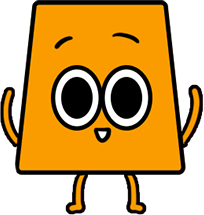

◆ 關於我們
Trivia 主要是蒐集各種懷舊遊戲冷知識的網站，介紹各種大家所不知道的遊戲小知識。
激發人的好奇心，並帶領大家探索遊戲們的小秘密。
激發人的好奇心，並帶領大家探索遊戲們的小秘密。
◆ 建立原因
有許多膾炙人口、老少咸宜的遊戲，雖然被多數人所知道。
但有趣的製作過程和特殊的歷史，可就很少人知道了...... 因此我們創立了Trivia網站！
分享並整理各種懷舊遊戲的小知識，給喜歡吸收新知的朋友們，讓大家在玩遊戲時能夠增添一些驚喜感！
但有趣的製作過程和特殊的歷史，可就很少人知道了...... 因此我們創立了Trivia網站！
分享並整理各種懷舊遊戲的小知識，給喜歡吸收新知的朋友們，讓大家在玩遊戲時能夠增添一些驚喜感！
◆ 適合對象
對遊戲有濃厚興趣、對懷舊遊戲的背景故事充滿好奇的人。
◆ 設計風格
以遊戲為主題選出網頁的主色調：黑色、白色、黃色和靛藍色。
並且加入LED發光效果，讓整體介面看起來更有遊戲感。
並且加入LED發光效果，讓整體介面看起來更有遊戲感。
◆ LOGO設計
用一個大寫的G代表遊戲（Game），加上雙眼來代表好奇想探知的意思，而Trivia則是冷知識的英文。
顏色以黑色、白色和黃色作設計，加上光暈讓LOGO更有遊戲的感覺。
顏色以黑色、白色和黃色作設計，加上光暈讓LOGO更有遊戲的感覺。
◆ 角色設計

Trivia 小精靈是以網頁LOGO延伸發想的角色，配色帶有好奇的黃色，以及對事物充滿好奇的大眼睛。
身體形狀則是設計成T型，讓角色看起來更加穩定。
小精靈的出現，是為了讓大家更容易理解文章的知識，同時也讓畫面更加豐富有趣。
身體形狀則是設計成T型，讓角色看起來更加穩定。
小精靈的出現，是為了讓大家更容易理解文章的知識，同時也讓畫面更加豐富有趣。
▼ 來玩個小遊戲吧！